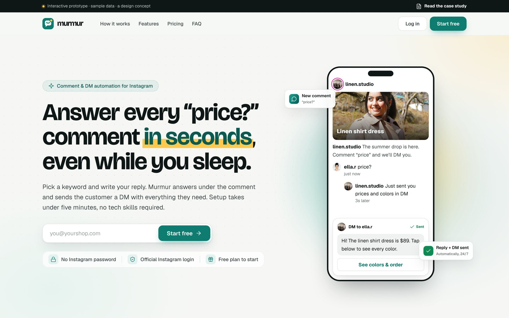
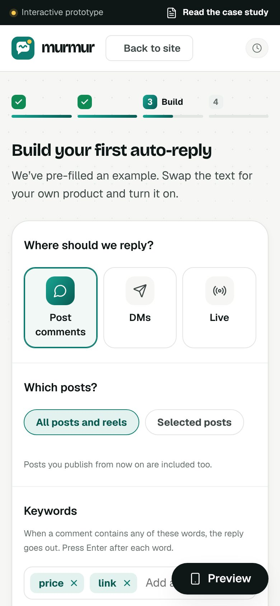
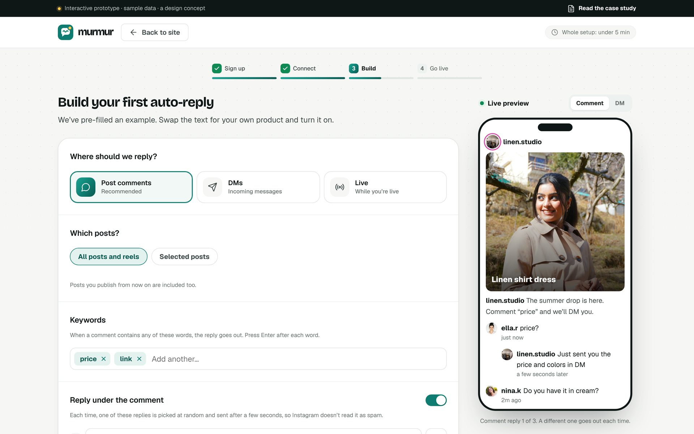
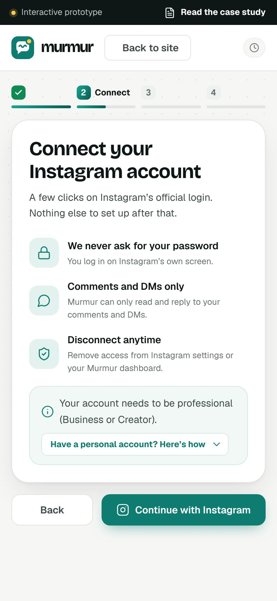

A product design case study: the landing page and onboarding for an Instagram DM tool. Open source.

Automation tools exist, but most start with an empty canvas of triggers and nodes. A shop owner replying at midnight gives up before she sees it work.
So the brief: from landing page to a working auto-reply in under five minutes.
02 / 07


The category is full of blue-to-purple gradients. Teal carries every action; butter is rationed for “look here”.